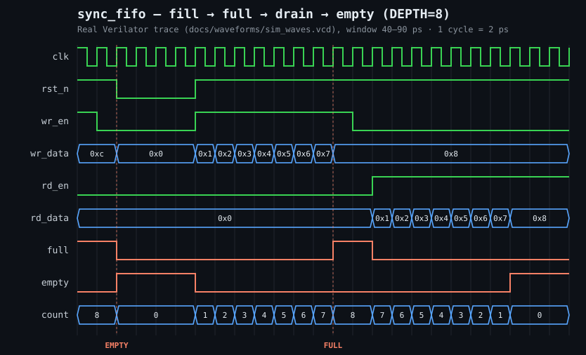

A formally-verified, parameterizable synchronous FIFO in SystemVerilog — proven correct with SymbiYosys, not just simulated.
This is not a hand-drawn diagram. It is rendered directly from the VCD produced by make sim (Verilator, DEPTH=8), sliced to the directed fill→full→drain→empty scenario. Every edge and bus value is taken verbatim from the trace.

Correctness properties are expressed as SVA assertions and discharged via Bounded Model Checking (BMC, depth 20, the required gate) with a k-induction proof (basecase depth 15) as an informational supplement. A Verilator C++ testbench with a std::queue golden-model scoreboard provides constrained-random coverage at multiple depths, and a built-in fault-injection path proves the checker is not vacuous.
| Script | Mode | Depth | Role |
|---|---|---|---|
| formal/sync_fifo_bmc.sby | bmc | 20 | CI gate — required |
| formal/sync_fifo.sby | prove (k-ind) | 15 | Inductive proof (informational) |
| formal/sync_fifo_cover.sby | cover | — | Reachability of key states |
| DEPTH | Result | Self-test |
|---|---|---|
| 4 | PASS (0 errors) | fault caught (exit ≠ 0) |
| 8 | PASS (0 errors) | covers: all 3 REACHED |
| 16 | PASS (0 errors) | — |
| 64 | PASS (0 errors) | — |
| 256 | PASS (0 errors) | — |
With only ADDR_WIDTH-bit pointers there are two indistinguishable states where wptr == rptr: the FIFO is completely empty and completely full (after wrapping). The standard resolution is to extend each pointer to ADDR_WIDTH+1 bits — the extra MSB flips once per full wrap of the address space, unambiguously distinguishing full from empty.
┌───────────────────────────────────┌
wr_en ─────────────► │ sync_fifo (DUT) │
wr_data ────────────► │ │
│ ADDR_WIDTH+1-bit write pointer │
│ │ │
│ ▼ │
│ ┌────────────────────┌ │
│ │ mem[0..DEPTH-1] │ │ ◄─ DATA_WIDTH bits each
│ │ (ring buffer) │ │
│ └────────────────────└ │
│ │ │
│ ADDR_WIDTH+1-bit read pointer │
rd_en ─────────────► │ ┌────────────────────────┌ │
full ◄───────────── │ │ Empty/Full Comparators │ │
empty ◄───────────── │ │ empty = (wptr == rptr) │ │
│ │ full = (wptr[AW] != │ │
│ │ rptr[AW]) AND │ │
│ │ (wptr[AW-1:0] == │ │
│ └──────────────────────────└ │
count ◄───────────── │ count = wptr - rptr (unsigned) │
rd_data ◄───────────► │ rd_data: registered (1-cyc lat) │
└────────────────────────────────────└
git clone https://github.com/billdmar/sync-fifo-formal.git cd sync-fifo-formal make lint # RTL lint with Verilator make formal-bmc # Bounded model check (depth 20) — CI gate make sim # Verilator simulation at DEPTH=8 make all # Full CI gate: lint + synth + formal-bmc + sim